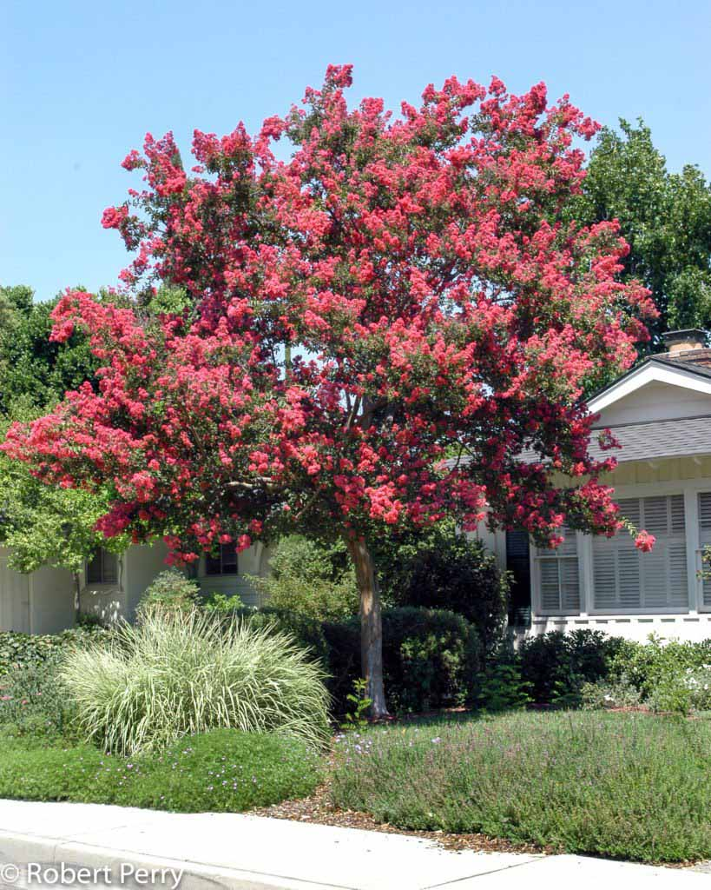
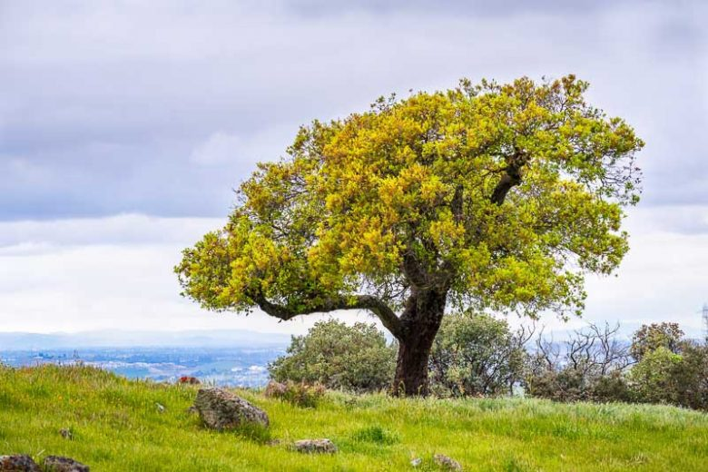
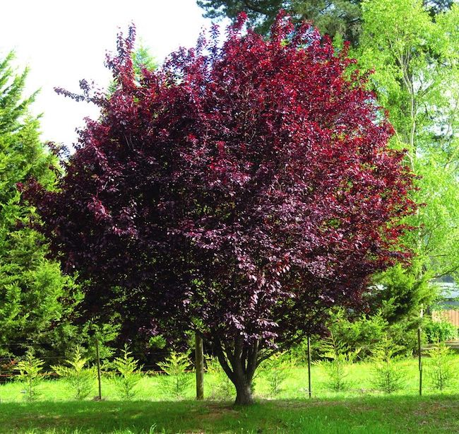

Now: Csb
Csb - warm summer mediterranean: warm (not hot), dry summers, never above 72°F, cool ocean currents, upwelling, higher latitudes --> cool.
2100: Csb
Csb - warm summer mediterranean: warm (not hot), dry summers, never above 72°F, cool ocean currents, upwelling, higher latitudes --> cool.
749,256 people living here.
Average SUHI daytime: 0.75
Average SUHI nighttime: 0.19
Similar to: Oakland
Suggested Urban Plants

Platanus hybrida

Lagerstroemia indica

Pyrus calleryana

Liquidambar styraciflua

Quercus agrifolia

Prunus cerasifera

Sequoia sempervirens

Pistacia chinensis

Syringa reticulata

Ginkgo biloba